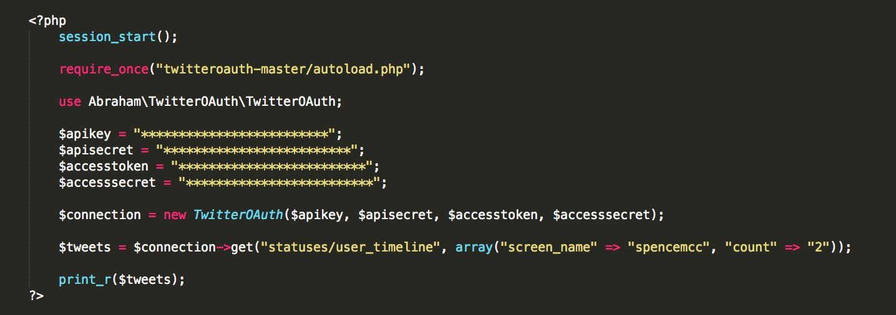

If you need somewhere to start in web development, look no further than https://www.udemy.com/complete-web-developer-course/. I've been cruising through this course whenever I have some free time, and recently I ran into some issues with it given how some of the information is now out of date (as is the nature of the Internet).
If you're experiencing problems in Section 9 - APIs with the Twitter API, that is because it has been upgraded since this video was created.
Here is the code that I finally got to work after some visits to Stack Overflow:
Notice that the syntax for the GET request is different in the updated API. Arguments are passed in as an array, not as URL encoded values. The TwitterOAuth library also has a few hundred more commits than it did when this video was created, so the location and name of some of the files has changed.
Make sure that you have updated your hosting to PHP 5.5 as well, as the new library does not support lower versions of PHP and will throw out an error dealing with the '[' in line #334 if you try to use an older one.
How to update PHP to PHP 5.5:
That should take care of all of the errors you are seeing. If not, please tweet at me @spencemcc and I will help you troubleshoot it.